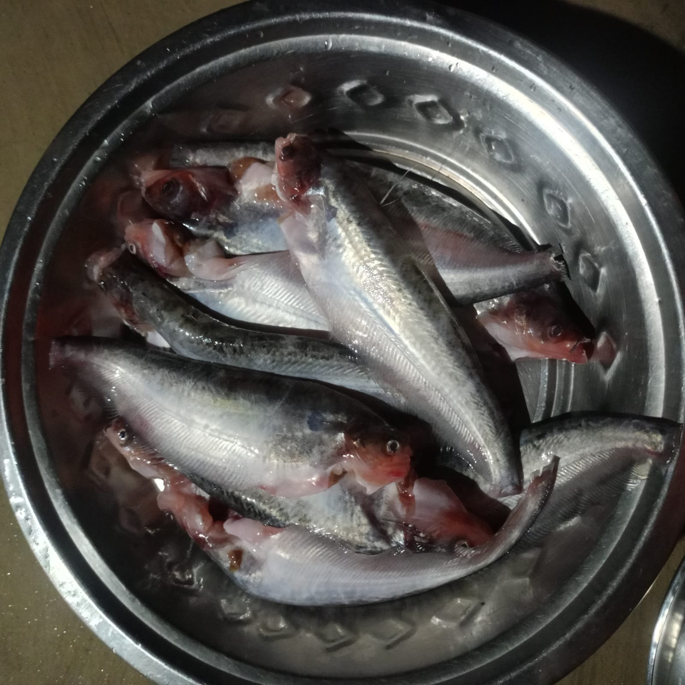
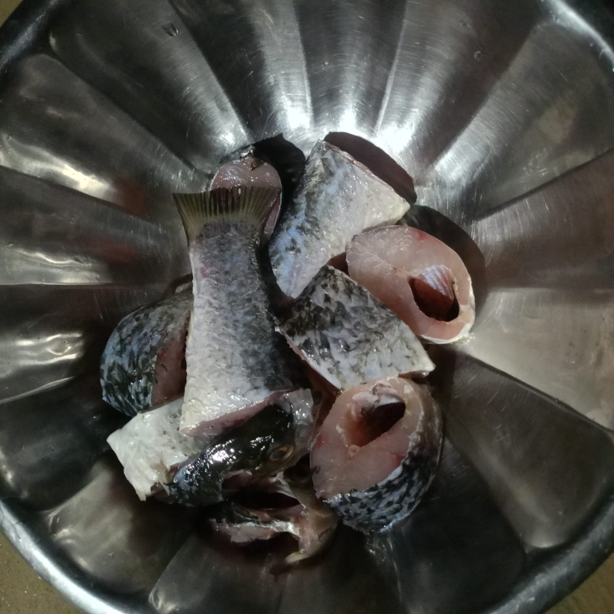
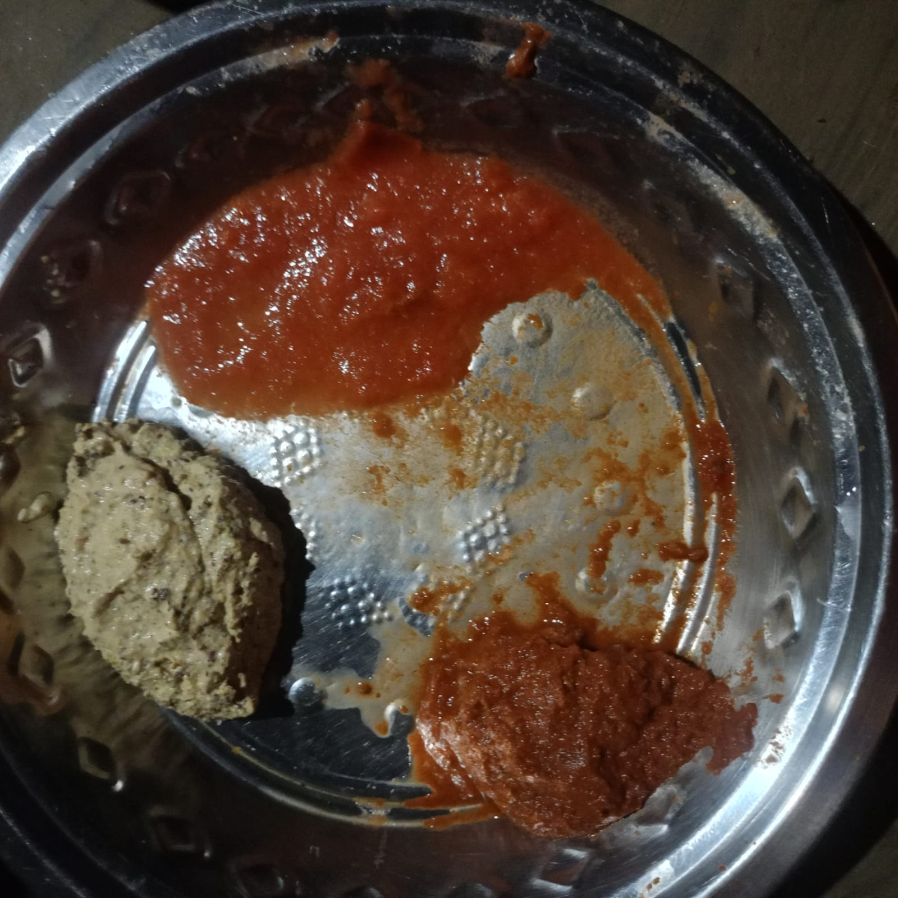
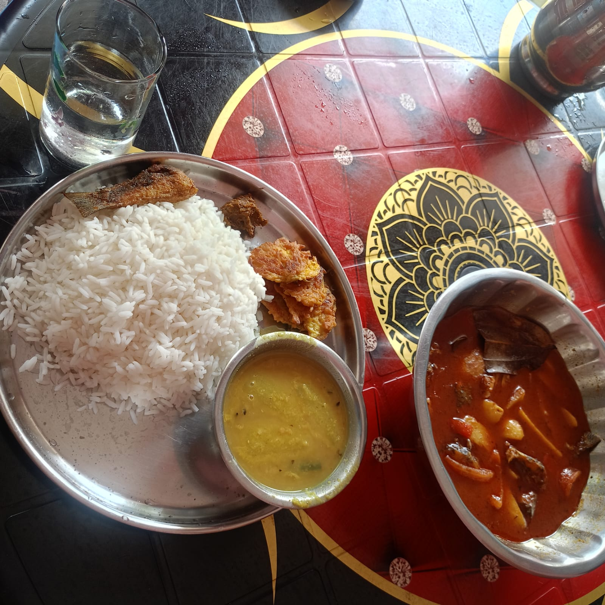

SPICELO STORY
🐟 Bengali Fish Curry (Macher Jhol)
Learn how to make a simple homemade Bengali Fish Curry, also known as Macher Jhol. This recipe uses fresh fish, potatoes, tomatoes, green chillies, mustard oil and homemade masala pastes. No packaged spice powder is used.

The Story Behind This Dish
When guests came to our home, my mother would often make Macher Jhol for them. I grew up watching her prepare this simple Bengali fish curry, and those memories stayed with me.
Now, whenever guests come to my home, I make Macher Jhol myself. This recipe is my way of keeping that simple homemade tradition alive.
This recipe serves 3 people and is made with fresh ingredients and homemade masala pastes. I don't use packaged spice powders because I feel the fresh ingredients give the curry a better homemade taste.
I especially enjoy serving it with steamed white rice.
50 min
3 People
Fresh Masala
Easy
Ingredients
For 3 persons
- 500 g small-to-medium-size fish
- 2 tomatoes — 1 for paste and 1 chopped
- 2 green chillies
- 1 spoon ginger paste
- 2 potatoes
- 1 spoon cumin (jeera) paste
- 1 bay leaf (tej patta)
- 2 spoons mustard oil
- Salt according to taste
- 250 ml water
Important: This recipe does not use packaged spice powder. The masala is prepared fresh.
📸 From Raw Fish to Macher Jhol
Follow the cooking journey from the fresh fish and homemade masala preparation to the finished curry and final serving with steamed white rice.




🎬 Macher Jhol Cooking Video
How to Make Bengali Fish Curry (Macher Jhol)
- First, prepare all the ingredients and fresh masala pastes. Make paste from one tomato and chop the other tomato.
- Heat mustard oil in a kadai and fry the fish pieces. Once fried, keep the fish aside.
- Heat the kadai again and add mustard oil and bay leaf.
- Add the prepared masala and cook it properly until the masala becomes lightly brown.
- Add a little water and mix the masala well.
- Add the potatoes and mix them with the cooked masala.
- Add 250 ml water, cover the kadai and cook for about 15 minutes.
- Add the fried fish pieces to the curry.
- Cover and cook for another 10 minutes until the fish and potatoes are properly cooked.
- Serve the Macher Jhol hot with steamed white rice.
Total time: approximately 50 minutes.
Tips for Making Delicious Macher Jhol
- Use fresh fish for the best homemade taste.
- Fry the fish before adding it to the gravy.
- Prepare the masala fresh instead of using packaged spice powder.
- Cook the masala properly before adding the water.
- Cover the kadai while cooking the potatoes and gravy.
- Add the fried fish after the potatoes have cooked with the gravy.
- Serve hot with steamed white rice.
Macher Jhol FAQ
How many people does this Macher Jhol recipe serve?
This recipe is designed to serve approximately 3 people.
What type of masala is used in this recipe?
This recipe uses fresh homemade masala pastes. No packaged spice powder is used.
How much water is used for Macher Jhol?
This recipe uses 250 ml of water for the gravy.
What can I serve with Macher Jhol?
Macher Jhol can be served hot with steamed white rice.
How long does this Macher Jhol take to cook?
The cooking process takes approximately 30 minutes.
My Food Note
For me, Macher Jhol is more than a fish curry. It reminds me of watching my mother cook for guests at home.
Today, when guests come to my home, I make this recipe myself. In this simple way, I continue a homemade tradition that I learned from my mother.
💬 Comments